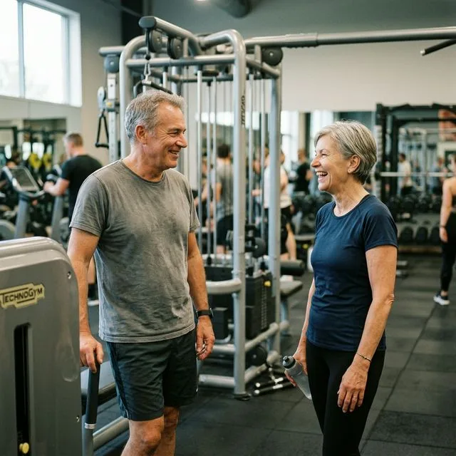
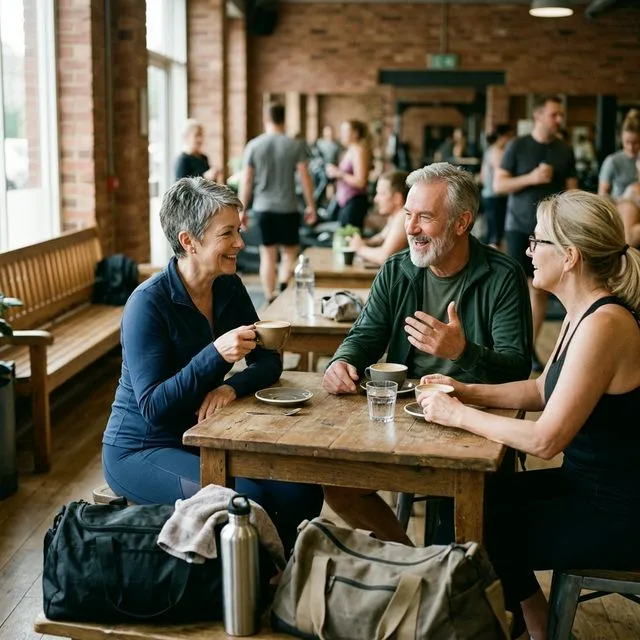
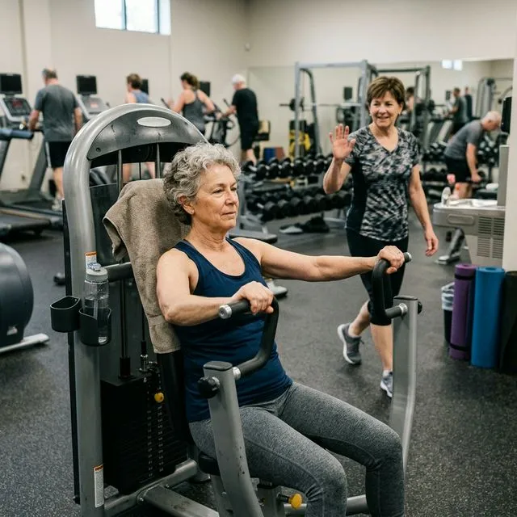

Wchodzisz na siłownię po to, żeby ćwiczyć. Zostajesz — bo tam są ludzie. I to jest jeden z najmniej opowiadanych sekretów regularnych bywalców siłowni po pięćdziesiątce: to miejsce, gdzie coś się zaczyna. Nie tylko w ciele.
Kluczowe wnioski
- Najważniejsze: Wchodzisz na siłownię po to, żeby ćwiczyć.
- W artykule znajdziesz konkrety o: Epidemia, o której mówi się za mało.
- Drugi kluczowy temat: Co się dzieje z człowiekiem, który regularnie chodzi na siłownię.
Epidemia, o której mówi się za mało
Zanim o siłowni — jeden fakt, który jest ważniejszy niż się wydaje. Samotność wśród dorosłych po pięćdziesiątce osiągnęła w ostatnich latach rozmiary epidemii. Niestatystycznie — dosłownie.
Światowa Organizacja Zdrowia w 2023 roku nazwała samotność jednym z najważniejszych problemów zdrowia publicznego na świecie. W Polsce, podobnie jak w całej Europie, około połowy osób po 60-tce deklaruje, że czuje się samotna częściej niż chciałaby. I tu pojawia się rzecz, o której nie mówi się dość głośno: przewlekła samotność poważnie szkodzi zdrowiu. To nie jest dramatyzowanie — stoją za tym realne mechanizmy biologiczne i psychiczne.
Siłownia nie jest lekarstwem na samotność. Ale jest — i to potwierdzają badania — jednym z najskuteczniejszych naturalnych środowisk do jej przerywania. I dzieje się to bez żadnej organizacji, bez portalu randkowego, bez specjalnego programu. Po prostu przez bycie w jednym miejscu z ludźmi, którzy robią to samo co Ty. Jeśli jesteś dopiero przed pierwszą wizytą, zobacz też jak zacząć na siłowni po 50-tce.

Co się dzieje z człowiekiem, który regularnie chodzi na siłownię
Jest badanie, które bardzo dobrze to ilustruje. Naukowcy przez kilka lat śledzili członków programu fitness dla starszych osób — porównując ich z osobami w podobnym wieku, które do programu nie należały.
Kluczowe zdanie z tego badania: członkowie tworzyli relacje, które przekraczały granice siłowni. Siłownia jest miejscem spotkania. To co z tym spotkaniem zrobisz — zależy już tylko od Ciebie.
Umiarkowana i wysoka aktywność fizyczna wiązała się z 15-30% niższą szansą na dotkliwą samotność i izolację społeczną u osób po 65. roku życia. To nie jest efekt uboczny ćwiczenia. To jest jeden z jego głównych efektów.
Dlaczego siłownia łączy ludzi skuteczniej niż kawiarnia
Kawiarnia, kościół, klub książkowy — to wszystko są dobre miejsca na kontakty społeczne. Ale siłownia ma kilka cech, których inne miejsca nie mają. I to nie jest przypadkowe.
Wspólny cel bez wspólnej historii
Kiedy siedzisz obok kogokolwiek na siłowni — nie musisz mieć wspólnej przeszłości, żeby zacząć rozmawiać. Macie wspólny cel: ćwiczenie. To jest wystarczający lód społeczny, żeby powiedzieć: "jak to się robi?", "czy ta maszyna jest wolna?". I od tego zaczynają się rozmowy.
W kawiarni siadasz naprzeciwko nieznajomego i nie masz powodu zacząć. Na siłowni — masz. I to naturalne, akceptowalne społecznie wejście do rozmowy.
Powtarzalność — matka znajomości
Chodzisz na siłownię trzy razy w tygodniu o tej samej porze. Po miesiącu znasz twarze. Po dwóch — imiona. Po pół roku — wiesz że Krzysiek ma wnuka, że Marta biega w weekendy, że ten gość przy wioślarzu zawsze słucha jazzu. Nie dlatego że planowałeś poznać ludzi. Po prostu dlatego że byłeś w tym samym miejscu wielokrotnie.
Powtarzalność jest fundamentem wszystkich relacji. Siłownia jest jednym z nielicznych miejsc, gdzie dorosły człowiek po pięćdziesiątce ma strukturalną powtarzalność z innymi ludźmi w podobnym wieku.
Równość warunków
Na siłowni — w szczególności po pięćdziesiątce — wszyscy zaczynają na podobnej pozycji. Nie ma znaczenia czy byłeś prezesem czy kierowcą, czy mieszkasz w willi czy w bloku. Wszyscy walczycie z tym samym ciężarem, tą samą bieżnią, tym samym oporem. To jest demokratyzujące. I tworzy więź. A żeby tego startu nie zepsuć klasycznymi potknięciami, warto znać też największe błędy początkujących po 50-tce.
Wymiana doświadczeń — wiedza, która nie ma ceny
Jednym z niedocenianych aspektów chodzenia na siłownię po pięćdziesiątce jest to czego można się nauczyć od innych w podobnym wieku. Nie od instruktora z papierkiem — od osoby, która trzy lata temu miała operację kolana i teraz biega. Albo od kogoś kto przeszedł przez operację biodra i może powiedzieć które ćwiczenia działają a które nie.
Ta wiedza jest trudna do znalezienia w Internecie. Artykuły są pisane ogólnie. Ludzie na siłowni mówią szczegółowo — o swoim ciele, o tym co próbowali, o tym co działało. To są pojedyncze doświadczenia, które nie zastępują wiedzy specjalisty, ale bywają praktycznie bardzo pomocne.
Co jeszcze daje siłownia poza zdrowiem i znajomościami
Cel i struktura dnia
Po pięćdziesiątce, a szczególnie po przejściu na emeryturę, jednym z najtrudniejszych wyzwań jest utrata struktury dnia. Nie obowiązki — a właśnie ich brak — bywa dezorientujący i depresyjny.
Siłownia daje strukturę. Mam trening o 9:00 we wtorek — to jest plan. Plan to zobowiązanie. Zobowiązanie to cel. Coś co daje powód, żeby wstać. Brzmi banalnie, ale badania pokazują że osoby z większym poczuciem celu żyją dłużej i lepiej niż osoby bez celu — niezależnie od stanu zdrowia. Taka regularność dużo łatwiej powstaje, kiedy masz prosty plan na wejście, więc przydaje się przewodnik, jak zacząć na siłowni po 50-tce.
Poczucie sprawczości
Podniosłeś dzisiaj więcej niż tydzień temu. Przebiegłeś kilometr więcej niż miesiąc temu. Mogę dziś wstać z krzesła bez trzymania się oparcia — a pół roku temu nie mogłem.
Takie malutkie zwycięstwa są psychologicznie ogromne. Szczególnie dla osób po pięćdziesiątce, które często zmagają się z poczuciem że czas działa przeciwko nim. Siłownia odwraca ten kierunek: pokazuje że można się rozwijać w każdym kierunku mimo wieku. I to jest jeden z najpotężniejszych efektów psychologicznych regularnego ćwiczenia — większy niż sama sylwetka.
Wyjście z domu — mechanizm, który się kręci kręcąc
Jest prosta zależność: ludzie, którzy regularnie gdzieś wychodzą — są mniej samotni, mają więcej energii, więcej się uśmiechają, więcej planują. Siłownia jest pretekstem do wyjścia. Potem często po treningu idzie się na kawę. Albo na spacer. Albo do sklepu z przyjemności, a nie z obowiązku. Jeden taki nawyk potrafi wyraźnie ożywić życie społeczne.

Jak zacząć, jeśli idea siłowni jako miejsca spotkań brzmi absurdalnie
Rozumiem że dla wielu osób siłownia kojarzy się z miejscem, gdzie chodzi się samemu, słucha muzyki przez słuchawki i nie patrzy na innych. I tak też można — i to też ma sens. Dobrze tylko wejść w to bez chaosu i bez przeciążeń, które potem kończą się zniechęceniem, więc po drodze zerknij też na błędy, które najczęściej kończą się frustracją albo bólem stawów.
Ale jeśli chcesz, aby siłownia była również częścią życia społecznego — jest kilka prostych sposobów, żeby to uruchomić:
- Zajęcia grupowe na start — spinning, pilates, joga, trening funkcjonalny w grupie. Masz wspólny ruch, wspólny wysiłek, wspólną przestrzeń. Po zajęciach najłatwiej jest o naturalną chwilę rozmowy. To jest najprostsze wejście do społeczności siłowni.
- Chodź regularnie o tej samej porze — poznasz tych samych ludzi. Twarze stają się znajomymi. Znajomi stają się rozmówcami.
- Zapytaj o radę — to działa wszędzie. Na siłowni w szczególności. Pytasz kogoś starszego: "Jak Pan długo już ćwiczy? Co polecasz nowym?". I masz pięć minut rozmowy.
- Przyjdź z kimś — zaproś znajomego, sąsiada, kolegę z pracy. Wspólny trening to często pretekst do wyjścia na kawę po treningu. A potem to się kręci samo.

Na koniec — coś co chciałbym, żeby zostało
Mamy w kulturze pewien obraz człowieka po pięćdziesiątce na siłowni. Samotny, skupiony, słuchawki, nie patrzy na innych. To jest jeden model — i jest ok.
Ale jest też inny model. Człowiek, który przyszedł po raz pierwszy trzy lata temu i nie znał nikogo. Pytał jak działa jedno z urządzeń. Zagadał z ludźmi po zajęciach. I który dziś ma na siłowni kilkunastu znajomych z którymi pije kawę po treningu, wymienia się adresem fizjoterapeuty i wiedział, że w środę będzie Marta, a w piątek — Tomek.
Siłownia nie jest gwarantowanym miejscem na przyjaźń. Ale jest jednym z niewielu miejsc, gdzie dorosły człowiek po pięćdziesiątce ma naturalny, powtarzalny i bez wysiłku możliwy kontakt z ludźmi w podobnym wieku i podobnej sytuacji życiowej.
Po pięćdziesiątce życie inne niż w czasach młodości. Inaczej się poznaje ludzi. Inaczej buduje zaufanie. Siłownia to jedno z niewielu miejsc, gdzie te więzi budują się naturalnie — bez apki, bez networkingu, bez wizytówek. Przez wspólny pot, wspólne bóle kolan i wspólne wrażenie, że dziś było ciut ciężej niż w zeszłym tygodniu.
To wszystko wystarczy, żeby zacząć.
Źródła
- [1] Holt-Lunstad J, Smith TB, Baker M, Harris T, Stephenson D. Loneliness and social isolation as risk factors for mortality: a meta-analytic review. Perspect Psychol Sci. 2015; 10(2): 227-237.
- [2] Wallace J, et al. (2023). Social Connectedness and Health outcomes through Fitness Programs for Older Adults: A Systematic Review. International Journal of Aging and Human Development.
- [3] Smith M, et al. (2020). The impact of group-based physical activity on social isolation and loneliness in older adults. Journal of Aging and Physical Activity.
- [4] Cohen-Mansfield J, et al. (2021). The relationship between physical activity and health, mental health, and loneliness in older adults. BMC Geriatrics.
- [5] European Commission (2022). Loneliness in the EU: Insights from a new survey. Joint Research Centre.
- [6] WORLD HEALTH ORGANIZATION (2023). Social Connection as a Public Health Priority.
FAQ
Czy siłownia po 50 jest bezpieczna dla początkujących?
Tak, jeśli plan jest dopasowany i progresja stopniowa. Najwięcej problemów daje nie sam trening, tylko zbyt szybkie zwiększanie obciążeń.
Jak przełamać lęk przed siłownią po 50?
Pomaga pierwszy prosty plan, spokojna pora treningu i skupienie na własnym tempie. Wiele osób szybko odkrywa, że obawy były większe niż realna trudność.
Jakie ćwiczenia na siłowni są najlepsze po 50 na start?
Na początek najlepiej sprawdzają się podstawowe ruchy wielostawowe w bezpiecznych wariantach oraz ćwiczenia stabilizacji. Priorytetem jest technika i regularność.